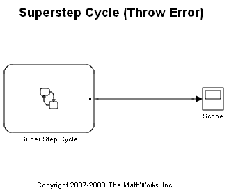
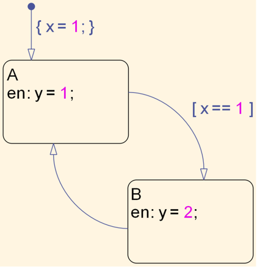

Superstep Cycle (Throw Error)
This demonstration shows 'Throw Error' mode behaviour for the Superstep semantics for Stateflow® charts. Please see the documentation for help on selecting this mode for the Stateflow chart. Once this mode is turned on, whenever there is a cycle or there are too many transitions in the possible transition path from the current state during a Superstep, the chart throws an error after a certain number of transitions.
Double click on the Stateflow chart named 'Super Step Cycle' to open it. Notice the cycle in the states. Run the simulation and notice the Error Message Dialog box that appears.
 